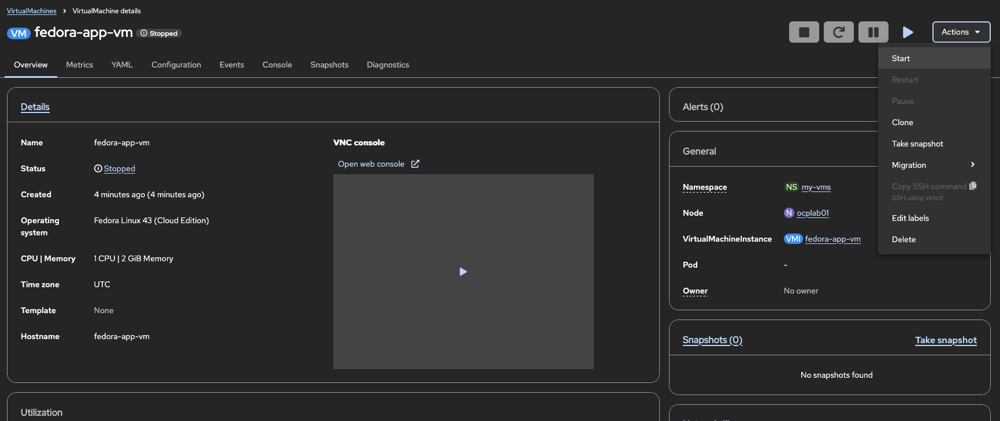
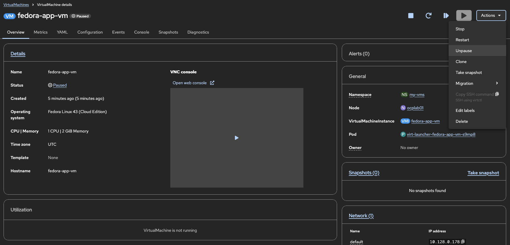

Understanding VM Lifecycle States and Basic Operations
Overview
Understanding the lifecycle of virtual machines in OpenShift Virtualization is essential for effective VM management, troubleshooting, and automation. This guide explains the relationship between VirtualMachine and VirtualMachineInstance resources, the various states a VM can be in, and how to manage VMs throughout their lifecycle.
Versions tested:
OpenShift 4.20
Prerequisites
-
OpenShift 4.18+ with OpenShift Virtualization installed
-
Access to the OpenShift web console or CLI tools (
oc,virtctl) -
At least one VM created in your cluster (see Creating VMs from Web Console Using Templates)
VirtualMachine vs VirtualMachineInstance
OpenShift Virtualization uses two primary resources to manage virtual machines:
VirtualMachine (VM)
The VirtualMachine resource is the persistent definition of your VM. Think of it as a template or specification that defines:
-
VM name and namespace
-
CPU and memory configuration
-
Disk and network attachments
-
Boot order and firmware settings
-
Run strategy (how the VM should behave)
The VirtualMachine resource exists whether the VM is running or not.
# List VirtualMachine resources
oc get vm -n my-vmsExample output:
NAME AGE STATUS READY
fedora-app-vm 14m Running TrueVirtualMachineInstance (VMI)
The VirtualMachineInstance resource represents an actual running instance of a VM. It is created when a VM starts and deleted when the VM stops. The VMI contains:
-
Runtime information (IP address, node placement)
-
Current phase/state
-
Guest agent information (when installed)
# List VirtualMachineInstance resources
oc get vmi -n my-vmsExample output:
NAME AGE PHASE IP NODENAME READY
fedora-app-vm 78s Running 10.128.0.184 ocplab01 True| A stopped VM has a VirtualMachine resource but no VirtualMachineInstance. When you start the VM, a VMI is created. When you stop it, the VMI is deleted but the VM resource remains. |
VM Lifecycle States
A VM transitions through several states during its lifecycle. Understanding these states helps with monitoring and troubleshooting.
State Descriptions
| Order | State | Description | VMI Exists? |
|---|---|---|---|
1 |
Stopped |
VM is defined but not running. No compute resources consumed. |
No |
2 |
Pending |
VMI created, waiting for prerequisites (storage, network). |
Yes |
3 |
Scheduling |
Kubernetes scheduler is finding a suitable node. |
Yes |
4 |
Starting |
VM is booting on the assigned node. |
Yes |
5 |
Running |
VM is fully operational and accepting connections. |
Yes |
6 |
Paused |
VM execution is frozen. State preserved in memory. |
Yes |
7 |
Stopping |
Graceful shutdown in progress. |
Yes |
8 |
Terminating |
Final cleanup of VMI resources. |
Yes (briefly) |
Managing VM Lifecycle
Starting VMs
To start a stopped VM:
Web Console:
-
Navigate to Virtualization → VirtualMachines
-
Find your VM in the list
-
Click the VM name to open details, then click Actions → Start
-
Or click the kebab menu (three dots) and select Start

CLI:
virtctl start fedora-app-vm -n my-vmsVerify the VM started:
# Check VM status
oc get vm fedora-app-vm -n my-vms
# Check VMI was created
oc get vmi fedora-app-vm -n my-vmsExample output:
NAME AGE STATUS READY
fedora-app-vm 14m Running True
NAME AGE PHASE IP NODENAME READY
fedora-app-vm 78s Running 10.128.0.184 ocplab01 TrueStopping VMs
Stopping a VM performs a graceful shutdown and deletes the VMI.
Web Console:
-
Navigate to your VM’s details page
-
Click Actions → Stop

CLI (graceful stop):
virtctl stop fedora-app-vm -n my-vmsCLI (force stop):
Use force stop when a VM is unresponsive:
virtctl stop fedora-app-vm -n my-vms --force| Force stop is equivalent to pulling the power cord. Use only when graceful shutdown fails. |
Verify the VM stopped:
# VM should show Stopped status
oc get vm fedora-app-vm -n my-vms
# VMI should no longer exist
oc get vmi fedora-app-vm -n my-vmsExample output:
NAME AGE STATUS READY
fedora-app-vm 14m Stopped False
Error from server (NotFound): virtualmachineinstances.kubevirt.io "fedora-app-vm" not foundPausing and Resuming VMs
Pausing freezes VM execution while keeping its state in memory. This is useful for:
-
Temporarily freeing CPU resources
-
Taking consistent snapshots
-
Debugging or inspection
| Paused VMs still consume memory on the node. Only CPU execution is suspended. |
Web Console:
-
Navigate to your VM’s details page
-
Click Actions → Pause
-
To resume: Actions → Unpause


CLI:
# Pause a VM
virtctl pause vm fedora-app-vm -n my-vms
# Unpause a VM
virtctl unpause vm fedora-app-vm -n my-vmsVerify paused state:
oc get vm fedora-app-vm -n my-vmsExample output:
NAME AGE STATUS READY
fedora-app-vm 14m Paused FalseRestarting VMs
Restart performs a stop followed by a start. Use this when:
-
Applying configuration changes that require a reboot
-
Recovering from guest OS issues
-
Refreshing VM state
Web Console:
-
Navigate to your VM’s details page
-
Click Actions → Restart

CLI:
virtctl restart fedora-app-vm -n my-vms| Restart waits for graceful shutdown before starting. If the guest OS is unresponsive, the restart may take longer or require a force stop first. |
Deleting VMs
When deleting a VM, you can choose whether to also delete associated storage (PVCs/DataVolumes).
Web Console:
-
Navigate to your VM’s details page
-
Click Actions → Delete
-
In the confirmation dialog, choose whether to delete disks
-
Click Delete


CLI (delete VM, keep disks):
oc delete vm fedora-app-vm -n my-vmsBy default, DataVolumes owned by the VM are deleted. To preserve them, remove the owner reference first or use the web console option.
Verify deletion:
# VM should not exist
oc get vm fedora-app-vm -n my-vms
# Check if PVCs were preserved (if desired)
oc get pvc -n my-vmsExample output:
Error from server (NotFound): virtualmachines.kubevirt.io "fedora-app-vm" not found
No resources found in my-vms namespace.| VM deletion is permanent. Ensure you have backups of important data before deleting. |
Monitoring VM Status
Checking VM and VMI Status
Detailed VM information:
oc describe vm fedora-app-vm -n my-vmsExample output (relevant sections):
Name: fedora-app-vm
Namespace: my-vms
Labels: app=fedora-app-vm
...
Status:
Conditions:
Last Transition Time: 2026-03-05T17:10:11Z
Status: True
Type: Ready
Message: All of the VMI's DVs are bound and ready
Reason: AllDVsReady
Status: True
Type: DataVolumesReady
Status: True
Type: AgentConnected
Printable Status: Running
Ready: true
Run Strategy: ManualKey sections to review:
-
Status.Conditions - Shows current state and any issues
-
Status.PrintableStatus - Human-readable status
-
Status.Ready - Whether the VM is ready for use
Detailed VMI information:
oc describe vmi fedora-app-vm -n my-vmsExample output (relevant sections):
Name: fedora-app-vm
Namespace: my-vms
...
Status:
Guest OS Info:
Id: fedora
Kernel Release: 6.17.1-300.fc43.x86_64
Name: Fedora Linux
Pretty Name: Fedora Linux 43 (Cloud Edition)
Version Id: 43
Interfaces:
Interface Name: enp1s0
Ip Address: 10.128.0.184
Mac: 02:7e:e2:0a:7c:df
Name: default
Node Name: ocplab01
Phase: Running
Phase Transition Timestamps:
Phase: Pending
Phase: Scheduling
Phase: Scheduled
Phase: RunningKey sections:
-
Status.Phase - Current lifecycle phase
-
Status.Interfaces - Network information including IP addresses
-
Status.NodeName - Which node the VM is running on
-
Status.GuestOSInfo - Guest OS details (requires guest agent)
Understanding Conditions
VMs report conditions that indicate their state. Check these with:
oc get vm fedora-app-vm -n my-vms -o jsonpath='{.status.conditions}' | jqExample output:
[
{
"lastTransitionTime": "2026-03-05T17:10:11Z",
"status": "True",
"type": "Ready"
},
{
"message": "All of the VMI's DVs are bound and ready",
"reason": "AllDVsReady",
"status": "True",
"type": "DataVolumesReady"
},
{
"message": "cannot migrate VMI: PVC fedora-app-vm-rootdisk is not shared...",
"reason": "DisksNotLiveMigratable",
"status": "False",
"type": "LiveMigratable"
},
{
"status": "True",
"type": "AgentConnected"
}
]Common conditions:
| Condition | Meaning |
|---|---|
Ready |
VM is running and accessible |
Paused |
VM execution is paused |
AgentConnected |
QEMU guest agent is communicating |
Synchronized |
VM spec is synchronized with VMI |
VM Events
Events provide detailed information about what is happening with your VM:
# Get events for a specific VM
oc get events -n my-vms --field-selector involvedObject.name=fedora-app-vmExample output:
LAST SEEN TYPE REASON OBJECT MESSAGE
14m Normal SuccessfulDataVolumeCreate virtualmachine/fedora-app-vm Created DataVolume fedora-app-vm-rootdisk
90s Normal SuccessfulCreate virtualmachine/fedora-app-vm Started the virtual machine by creating the new virtual machine instance fedora-app-vm
90s Normal SuccessfulCreate virtualmachineinstance/fedora-app-vm Created virtual machine pod virt-launcher-fedora-app-vm-fktmb
84s Normal Created virtualmachineinstance/fedora-app-vm VirtualMachineInstance defined.
84s Normal Started virtualmachineinstance/fedora-app-vm VirtualMachineInstance started.Watch events in real-time:
oc get events -n my-vms -wCommon events and their meanings:
| Event | Description |
|---|---|
SuccessfulCreate |
VMI was successfully created |
Started |
VM started successfully |
Stopped |
VM stopped (graceful shutdown) |
Killing |
Force stop initiated |
FailedScheduling |
Could not find suitable node |
FailedCreate |
VMI creation failed (check for details) |
Run Strategies
Run strategies define how a VM behaves automatically throughout its lifecycle. The strategy is set in the VM specification and determines whether the VM starts automatically, restarts after stopping, or stays stopped.
Available Run Strategies
| Strategy | Behavior | Use Case |
|---|---|---|
|
VM starts automatically and restarts if it stops for any reason (including guest-initiated shutdown). |
Production workloads that must always be running. |
|
VM starts automatically and restarts only on failure. Guest-initiated shutdown keeps VM stopped. |
Services that should recover from crashes but respect intentional shutdowns. |
|
VM only starts or stops when explicitly requested via |
Development/test VMs or workloads with specific scheduling needs. |
|
VM stays stopped. Start commands are ignored. |
Temporarily decommissioned VMs or maintenance mode. |
Setting Run Strategy
In VM YAML:
apiVersion: kubevirt.io/v1
kind: VirtualMachine
metadata:
name: my-vm
spec:
runStrategy: Always # or RerunOnFailure, Manual, Halted
template:
# ... VM template specVia Web Console:
-
Navigate to your VM’s details page
-
Click the YAML tab
-
Modify the
spec.runStrategyfield -
Click Save

You cannot use both runStrategy and the deprecated running field simultaneously. Use runStrategy for new VMs.
|
Run Strategy vs Manual Commands
When using Always or RerunOnFailure, be aware that:
-
virtctl stoptemporarily stops the VM, but it will restart automatically -
To keep the VM stopped, change the run strategy to
HaltedorManual -
Guest-initiated shutdowns (e.g.,
shutdown -h nowinside the VM) behave differently depending on the strategy
Summary
You have learned:
-
The difference between VirtualMachine and VirtualMachineInstance resources
-
VM lifecycle states and transitions
-
How to start, stop, pause, resume, restart, and delete VMs
-
How to monitor VM status using conditions and events
-
How run strategies control automatic VM behavior
See Also
-
Creating VMs from Web Console Using Templates - Creating VMs from the web console
-
Using virtctl for VM Management - CLI commands for VM management